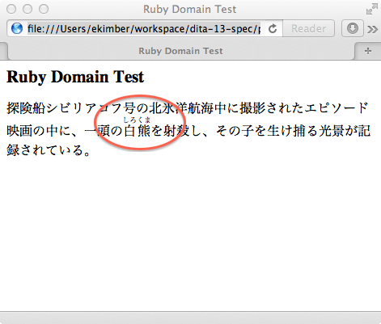

Provide a domain that provides the ruby markup from HTML5 as used by Japanese and other ideographic languages.
In Japanese, the pronunciation of ideographic characters cannot always (or often) be known from context. The ideographic characters are annotated with their phonetic transliteration, a "ruby", which is rendered above or beside or following the ideographs. This is standard Japanese typography.
Japanese and other ideographic or similar languages where correct pronunciation may require phonetic annotation.
This feature adds a new optional vocabulary module. Users who need it will appreciate having it readily available. Users who do not need it may safely ignore it. The general architecture and semantics of DITA are not affected by this proposal.
rubyDomain.ent:
<?xml version="1.0" encoding="utf-8"?>
<!-- =============================================================
DITA Ruby Domain
Defines equivalent of HTML ruby elements for marking up
Japanese language documents.
Copyright (c) 2012 OASIS Open
============================================================= -->
<!-- ============================================================= -->
<!-- Ruby DOMAIN ENTITIES -->
<!-- ============================================================= -->
<!ENTITY % ruby-d-ph
" ruby
"
>
<!ENTITY ruby-d-att
"(topic ruby-d)"
>
<!-- ================== End DITA For Publishers Ruby Domain Entities ============ -->
<?xml version="1.0" encoding="utf-8"?>
<!-- =============================================================
DITA Ruby Domain
Defines equivalent of HTML ruby elements for marking up
Japanese language documents.
Copyright (c) 2012 OASIS Open
============================================================= -->
<!ENTITY % ruby "ruby" >
<!ENTITY % rb "rb" >
<!ENTITY % rp "rp" >
<!ENTITY % rt "rt" >
<!-- ============================================================= -->
<!-- ELEMENT NAME ENTITIES -->
<!-- ============================================================= -->
<!-- ============================================================= -->
<!-- ELEMENT DECLARATIONS -->
<!-- ============================================================= -->
<!-- In order to support HTML5, which allows a mix of PCDATA, other phrase-
level elements, and <rt> and <rp>, the content model must allow
%ph;, which means that the DTD allows <ruby> within <ruby>. However,
<ruby> should *not* be used within <ruby>, per the HTML
constraints on <ruby>. Likewise, if <rp> is used, it should be
used as <rp>(</rp><rt>...</rt><rp>)</rp> per the HTML5 spec.
-->
<!ENTITY % ruby.content
"
(%ph.cnt; |
%rb; |
%rp; |
%rt;)*
"
>
<!ENTITY % ruby.attributes
"
%id-atts;
%localization-atts;
base
CDATA
#IMPLIED
%base-attribute-extensions;
outputclass
CDATA
'ruby'
"
>
<!ELEMENT ruby %ruby.content; >
<!ATTLIST ruby %ruby.attributes; >
<!ENTITY % rb.content
"
(#PCDATA
)*
"
>
<!ENTITY % rb.attributes
"
%id-atts;
%localization-atts;
base
CDATA
#IMPLIED
%base-attribute-extensions;
outputclass
CDATA
'rb'
"
>
<!ELEMENT rb %rb.content; >
<!ATTLIST rb %rb.attributes; >
<!ENTITY % rp.content
"
(#PCDATA
)*
"
>
<!ENTITY % rp.attributes
"
%id-atts;
%localization-atts;
base
CDATA
#IMPLIED
%base-attribute-extensions;
outputclass
CDATA
'rp'
"
>
<!ELEMENT rp %rp.content; >
<!ATTLIST rp %rp.attributes; >
<!ENTITY % rt.content
"
(#PCDATA
)*
"
>
<!ENTITY % rt.attributes
"
%id-atts;
%localization-atts;
base
CDATA
#IMPLIED
%base-attribute-extensions;
outputclass
CDATA
'rt'
"
>
<!ELEMENT rt %rt.content; >
<!ATTLIST rt %rt.attributes; >
<!-- ============================================================= -->
<!-- SPECIALIZATION ATTRIBUTE DECLARATIONS -->
<!-- ============================================================= -->
<!ATTLIST ruby %global-atts; class CDATA "+ topic/ph ruby-d/ruby ">
<!ATTLIST rb %global-atts; class CDATA "+ topic/ph ruby-d/rb ">
<!ATTLIST rp %global-atts; class CDATA "+ topic/ph ruby-d/rp ">
<!ATTLIST rt %global-atts; class CDATA "+ topic/ph ruby-d/rt ">
<!-- ================== End Ruby Domain ==================== -->
TBD
TBD
<topic id="ruby-test-topic-01">
<title>Ruby Domain Test</title>
<body>
<p> 探険船シビリアコフ号の北氷洋航海中に撮影されたエピソード映画の中に、一頭の<ruby>
<rb>白熊</rb>
<rp>（</rp>
<rt>しろくま</rt>
<rp>）</rp>
</ruby>を射殺し、その子を生け捕る光景が記録されている。</p>
</body>
</topic>
